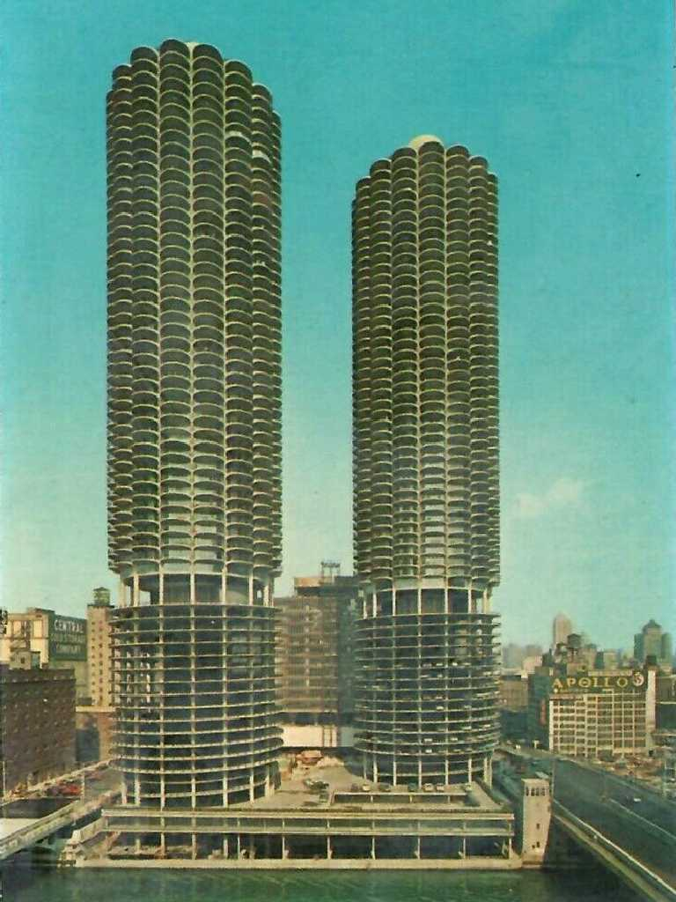
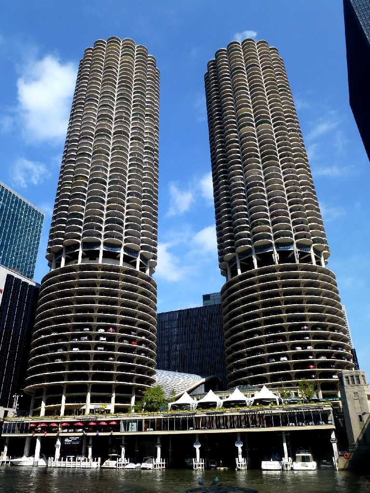
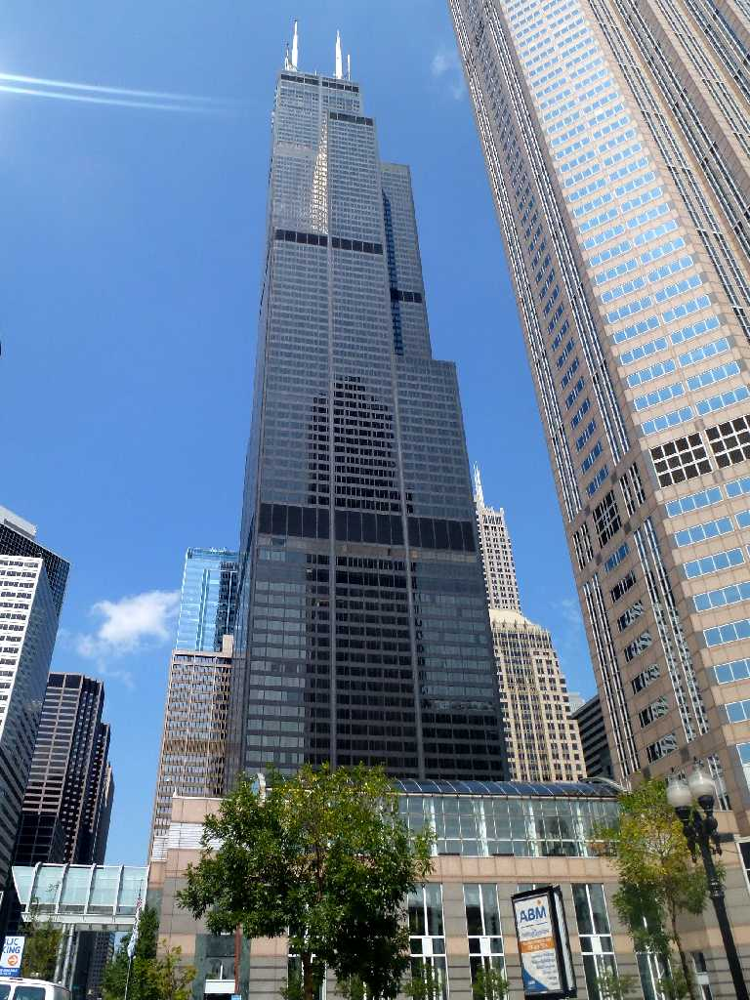
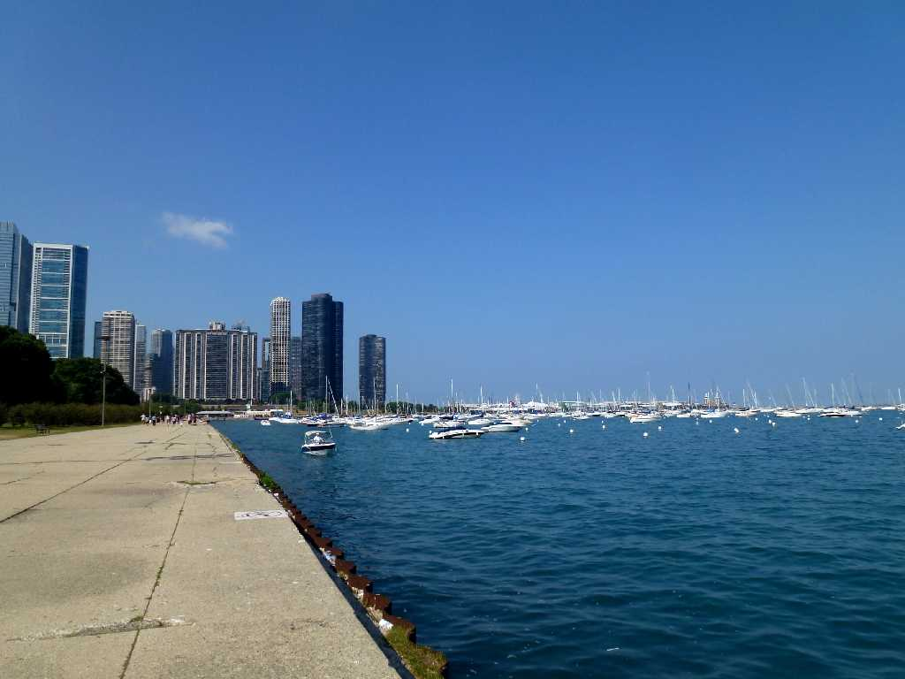
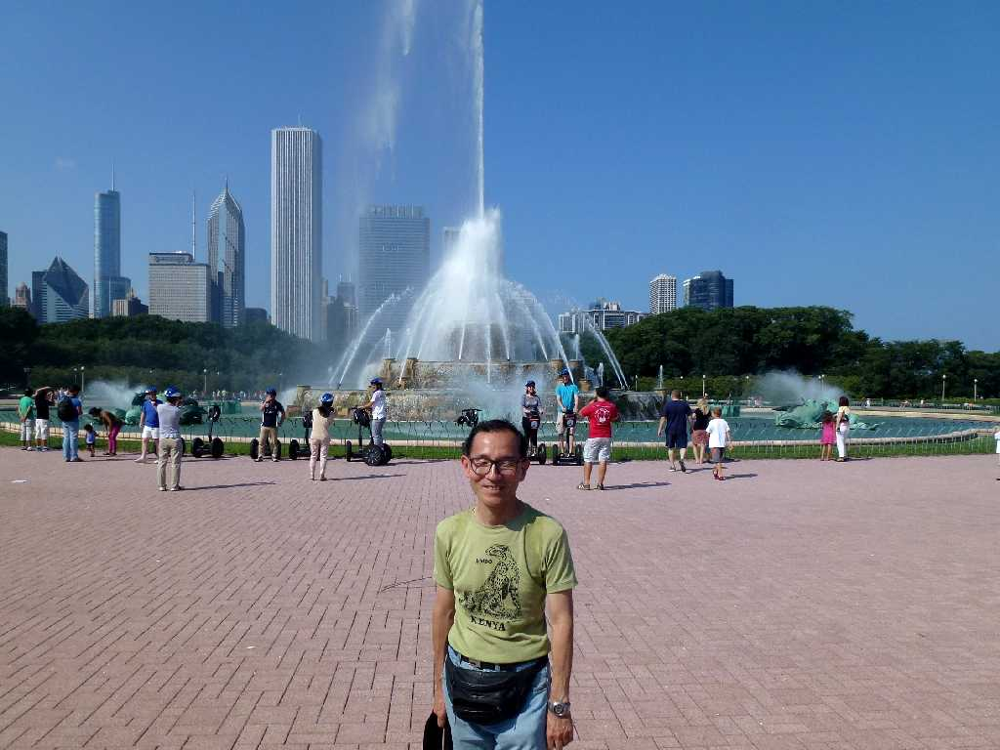

August 1970 Corn Tower Marina City Chicago
１９６４年に創られたシカゴマリーナシティにある愛称コーンタワーは第二次世界大戦後初めて建てられた高さ１７９ｍの高層ビルの住宅棟

Corn Tower Marina City Chicago
８０日間世界一周鉄道の旅で７０日目 学生時代以来約４０年ぶりの再訪問

Willis Tower Chicago
アメリカで最も高い高層ビルは１９７３年に創られたウィリスタワーで５２７ｍ１０１階建て

Lake Michigan Chicago

September 1 2013 Buckingham Fountain Grant Park Chicago